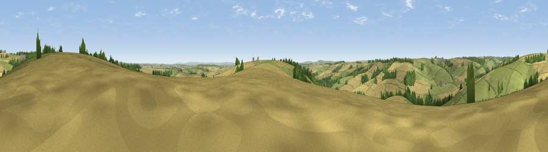

Viewpoint near Godmanstone
#21429 in England · top 48% of its area beats it · near GodmanstoneWhere it is
The exact computed spot (SY 67775 98875). Click the marker for map links.
The view, rendered

A 360° render of this exact spot computed from the terrain model, tree cover and land cover — summer colours, afternoon light, calibrated against photographs of famous viewpoints. Real trees, hedges and buildings will differ in detail.
The panorama
Grey silhouette: terrain skyline in each direction (720 bearings, Earth curvature and refraction included). Dashed green: skyline with trees (+15 m) and buildings (+8 m) as obstacles. Blue strip: how far the ground is visible on each bearing.
Where the view opens
Wedge length = distance to the farthest visible ground on that bearing (vegetation-aware). Rings at 10, 25 and 50 km.
What fills the view
47% grassland · 46% cropland · 6% woodland
Angular shares of the visible panorama (visual magnitude), not map area. Landscape diversity 0.39 (0–1 Shannon).
Key numbers
More beautiful places nearby
The staircase of upgrades: each row has a higher view potential than everything closer. Driving times are estimates from straight-line distance, calibrated against real road routing — check an actual route before setting out.
| Place | Direction | Drive | Score |
|---|---|---|---|
| Viewpoint near Godmanstone | NNE · 1 km | ~2 min | 53.9 |
| Viewpoint near Godmanstone | S · 1 km | ~3 min | 54.1 |
| Viewpoint near Cerne Abbas | N · 2 km | ~5 min | 59.6 |
| Viewpoint near Cerne Abbas | N · 3 km | ~7 min | 59.9 |
| Watts Hill [Giant Hill] | N · 5 km | ~11 min | 67.5 |
| Lyscombe Hill | ENE · 7 km | ~15 min | 70.5 |
| Viewpoint near Hilfield | NNW · 7 km | ~15 min | 71.6 |
| Viewpoint near Woolland | NE · 12 km | ~22 min | 74.5 |
50.78854, -2.45852 · source: screening · position refined by local search. Computed location — check access rights before visiting.